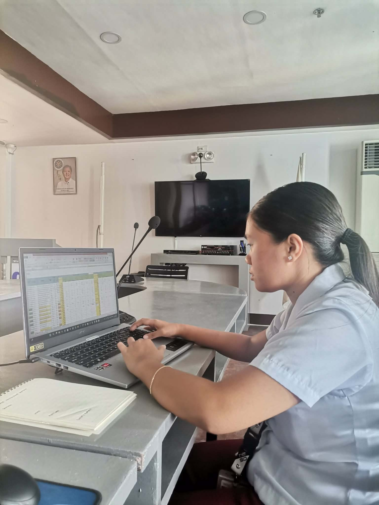
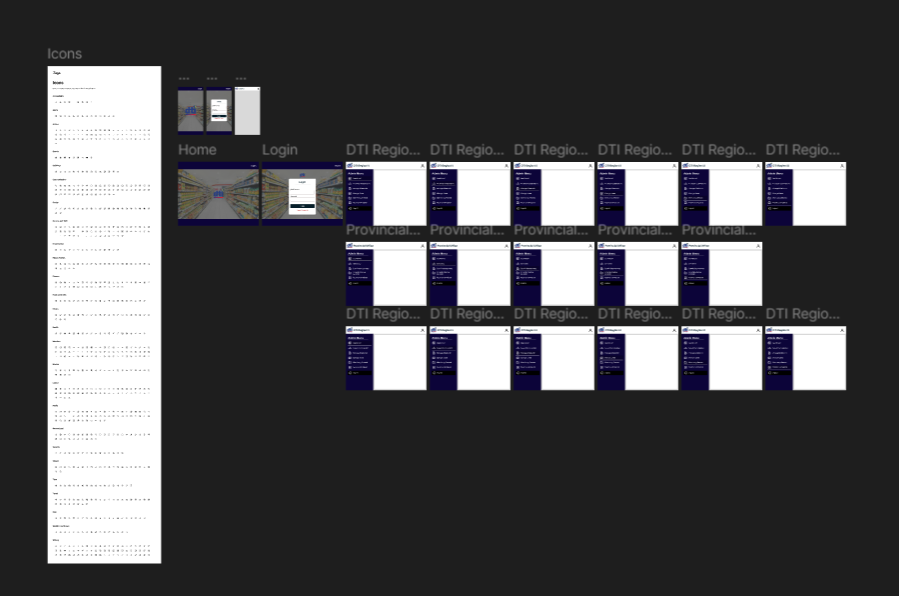
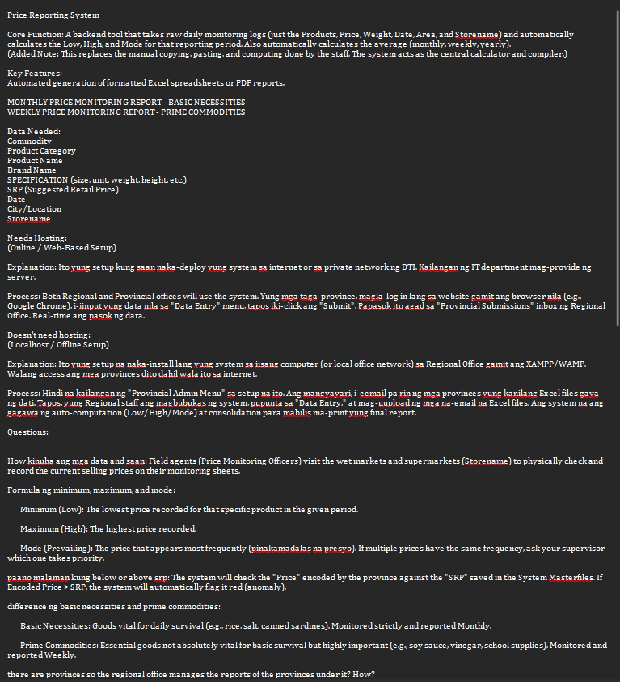

During my first week, I was immersed in the operational activities of the DTI-IX Consumer Protection Division. My initial responsibility involved the manual computation and encoding of weekly average prices for Basic Necessities and Prime Commodities across all five provinces in Region 9 using Excel. Through this repetitive task, I gained a deep understanding of the division’s data consolidation process and the importance of monitoring Suggested Retail Prices (SRP).
Recognizing the need for efficiency, my supervisor, Sir Kevin, tasked me with conceptualizing a digital "Price Reporting System" to automate these reports. I dedicated the remainder of the week to system analysis, identifying workflow bottlenecks, and drafting technical requirements. I successfully mapped out the system's process, designed the initial UI navigation layout (including dashboard menus), and prepared two deployment options (Localhost vs. Online) to present to management.
Key Tasks Accomplished
- Processed and submitted manual Weekly Price Monitoring reports for five provinces in Region 9.
- Conducted a comprehensive analysis of the manual data consolidation workflow for automation.
- Completed the initial research and planning phase for the proposed Price Reporting System.
- Designed the initial UI navigation layout and sidebar menus for the digital system.
- Drafted technical clarification questions regarding formulas (Minimum, Maximum, and Mode) and system architecture.
Photo Documentation


